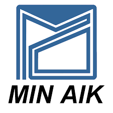

Company Name: Min Aik Technology (M) Sdn. Bhd.
Location: No. ST814, Jalan Masjid Tanah, Kawasan Perindustrian Masjid Tanah,78300 Alor Gajah Melaka
Established: 2000
Min Aik Technology (M) Sdn. Bhd. is a manufacturing and precision engineering company that provides contract manufacturing services to various industries. The company’s core activities include plastic injection molding, metal stamping, and automated assembly, which are carried out using advanced machinery and controlled production processes to ensure high efficiency and consistency.
The company produces a wide range of products, including components for hard disk drives (HDD), consumer electronics parts, and other industrial products. These products consist of high-precision metal and plastic components that require strict quality control and tight tolerance to meet customer specifications. In addition, the company is involved in sub-assembly processes, where multiple parts are assembled into semi-finished or finished products before delivery to customers.
Furthermore, Min Aik Technology provides one-stop manufacturing solutions, covering stages from product design and development to mass production and final assembly. The company serves both local and international customers, and places strong emphasis on quality control, precision, and continuous improvement to maintain high production standards and customer satisfaction.
To learn more about the company, please visit their official website.
Visit Company Website